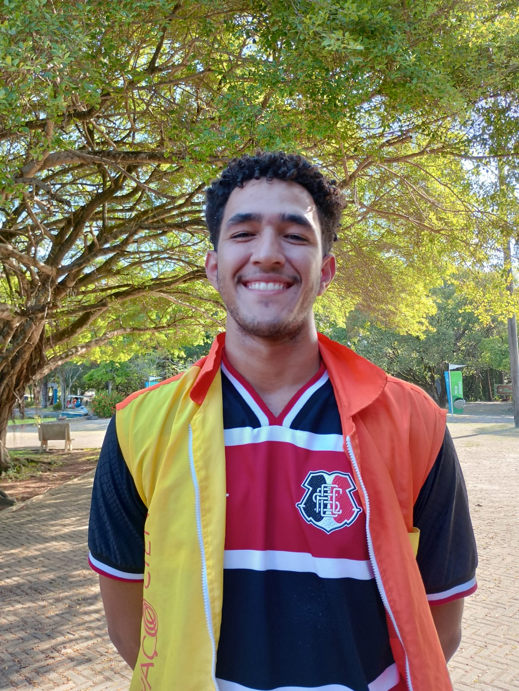

O Projeto
A Exposição Virtual Astronômica é um projeto empolgante baseado no plano de trabalho do monitor Luís Henrique, da área de astronomia do Espaço Ciências. A exposição usa fotos tiradas por visitantes do Observatório da Sé em Olinda e do Espaço Ciências para criar uma experiência virtual única, destacando suas perspectivas pessoais do universo. Esta exposição celebra a ciência e nossa conexão com o cosmos, convidando a todos para se maravilhar com as maravilhas do céu noturno. .
Criadores
Kauã Moita Pontes Mangueira
Principal criador do site. Cursa Desenvolvimento de Sistemas Informaticos pela GRAU TECNICO.

Luís Henrique Pereira Dos Santos
Divulgador do projeto e divulgação do formulário para envio de fotos. Monitor do Espaço Ciências na área de Astronomia.